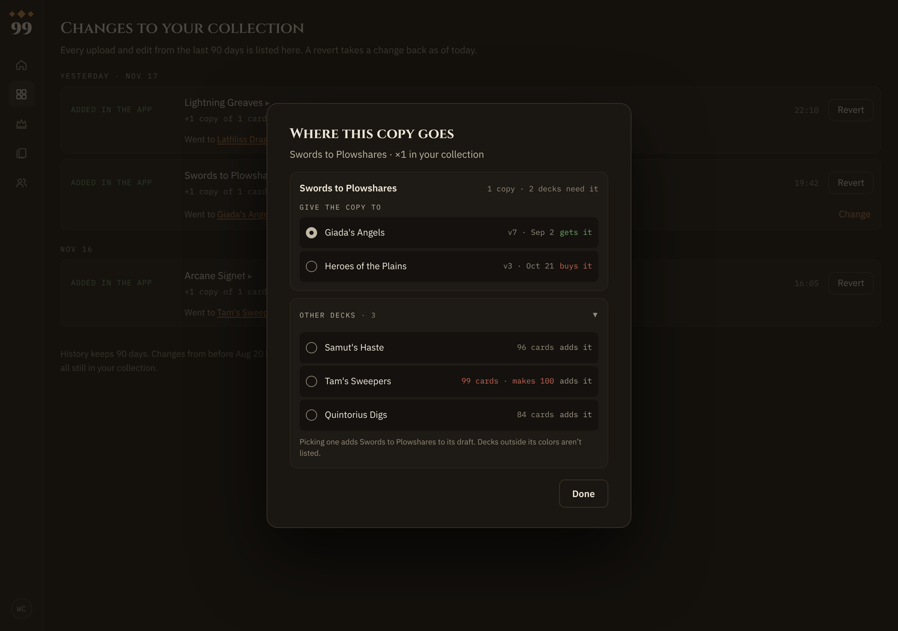
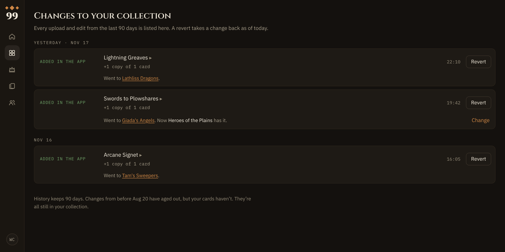

D · 1280
Card details on desktop opens the same modal over its own dialog. Rows go one line wide, as they ship.
D1 · History, chooser open

The shipped modal from History’s Change. Other decks, open here, sits under the shipped row in the same scroller; Done stays in view.
D2 · History, after a move

Change at the line’s end, under Revert. The record line keeps “Went to Giada’s Angels.” and says who has it now.